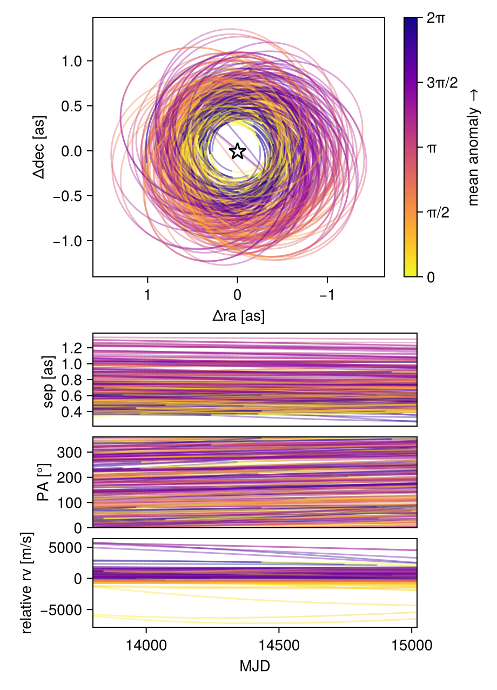

Fit Relative RV Data
Octofitter includes support for fitting relative radial velocity data. Currently this is only tested with a single companion. Please open an issue if you would like to fit multiple companions simultaneously.
The convention we adopt is that positive relative radial velocity is the velocity of the companion (exoplanets) minus the velocity of the host (star).
To fit relative RV data, start by creating a likelihood object:
using Octofitter
using OctofitterRadialVelocity
using CairoMakie
using Distributions
rel_rv_like = PlanetRelativeRVLikelihood(
(;epoch=5000.0, rv=−6.54, σ_rv=1.30),
(;epoch=5050.1, rv=−3.33, σ_rv=1.09),
(;epoch=5100.2, rv=7.90, σ_rv=.11),
)PlanetRelativeRVLikelihood Table with 4 columns and 3 rows:
inst_idx epoch rv σ_rv
┌──────────────────────────────
1 │ 1 5000.0 -6.54 1.3
2 │ 1 5050.1 -3.33 1.09
3 │ 1 5100.2 7.9 0.11The columns in the table should be . See the standard radial velocity tutorial for examples on how this data can be loaded from a CSV file.
The relative RV likelihood does not incorporate an instrument-specific RV offset. A jitter parameter called jitter can still be specified in the @planet block, as can parameters for a gaussian process model of stellar noise. Currently only a single instrument jitter parameter is supported. If you need to model relative radial velocities from multiple instruments with different jitters, please open an issue on GitHub.
Next, create a planet and system model, attaching the relative rv likelihood to the planet. Make sure to add a jitter parameter (optionally jitter=0) to the planet.
@planet b Visual{KepOrbit} begin
a ~ truncated(Normal(10, 4), lower=0, upper=100)
e ~ Uniform(0.0, 0.5)
i ~ Sine()
ω ~ UniformCircular()
Ω ~ UniformCircular()
θ ~ UniformCircular()
tp = θ_at_epoch_to_tperi(system,b,50420)
jitter ~ LogUniform(1, 1000) # m/s
end rel_rv_like
@system ExampleSystem begin
M ~ truncated(Normal(1.2, 0.1), lower=0)
plx ~ truncated(Normal(50.0, 0.02), lower=0)
end b
model = Octofitter.LogDensityModel(ExampleSystem)LogDensityModel for System ExampleSystem of dimension 12 and 6 epochs with fields .ℓπcallback and .∇ℓπcallback
using Random
rng = Random.Xoshiro(1234)
chain = octofit(rng, model)Chains MCMC chain (1000×29×1 Array{Float64, 3}):
Iterations = 1:1:1000
Number of chains = 1
Samples per chain = 1000
Wall duration = 33.04 seconds
Compute duration = 33.04 seconds
parameters = M, plx, b_a, b_e, b_i, b_ωy, b_ωx, b_Ωy, b_Ωx, b_θy, b_θx, b_jitter, b_ω, b_Ω, b_θ, b_tp
internals = n_steps, is_accept, acceptance_rate, hamiltonian_energy, hamiltonian_energy_error, max_hamiltonian_energy_error, tree_depth, numerical_error, step_size, nom_step_size, is_adapt, loglike, logpost, tree_depth, numerical_error
Summary Statistics
parameters mean std mcse ess_bulk ess_tail r ⋯
Symbol Float64 Float64 Float64 Float64 Float64 Floa ⋯
M 1.1810 0.0937 0.0045 424.1043 376.6450 1.0 ⋯
plx 49.9995 0.0196 0.0006 1107.3008 576.7153 0.9 ⋯
b_a 14.7569 2.7766 0.5152 28.8757 56.5226 1.0 ⋯
b_e 0.2922 0.1420 0.0066 431.1497 278.7340 1.0 ⋯
b_i 0.1105 0.1591 0.0095 206.6020 262.1270 1.0 ⋯
b_ωy -0.0191 0.6988 0.0526 182.2748 261.8981 1.0 ⋯
b_ωx 0.3847 0.6177 0.0788 75.1069 70.9361 1.0 ⋯
b_Ωy -0.0127 0.7288 0.0496 238.0950 609.8324 0.9 ⋯
b_Ωx -0.0900 0.6979 0.0480 234.0717 512.1580 1.0 ⋯
b_θy 0.0065 0.7117 0.0576 172.1687 580.8964 1.0 ⋯
b_θx 0.0329 0.7198 0.0536 200.1860 534.8502 1.0 ⋯
b_jitter 15.6936 43.0768 2.9958 48.9858 140.6915 1.0 ⋯
b_ω 0.8008 1.6408 0.1358 195.2076 494.5463 1.0 ⋯
b_Ω -0.1631 1.8225 0.1160 305.8980 570.2030 1.0 ⋯
b_θ 0.1087 1.8014 0.1241 244.6062 416.0448 1.0 ⋯
b_tp 41344.8822 7219.6443 577.1296 176.4232 279.2586 0.9 ⋯
2 columns omitted
Quantiles
parameters 2.5% 25.0% 50.0% 75.0% 97.5%
Symbol Float64 Float64 Float64 Float64 Float64
M 1.0056 1.1207 1.1786 1.2455 1.3725
plx 49.9626 49.9856 49.9997 50.0136 50.0395
b_a 9.3573 13.0571 14.6759 16.4450 20.2945
b_e 0.0234 0.1767 0.3139 0.4158 0.4903
b_i 0.0057 0.0420 0.0729 0.1183 0.4911
b_ωy -1.0779 -0.7029 -0.0163 0.6236 1.0696
b_ωx -0.9608 0.0231 0.5909 0.8860 1.0888
b_Ωy -1.0895 -0.7233 -0.0741 0.7233 1.0680
b_Ωx -1.0939 -0.7531 -0.1535 0.5616 1.0231
b_θy -1.0602 -0.7043 0.0452 0.7115 1.0621
b_θx -1.0762 -0.6648 0.0554 0.7278 1.0579
b_jitter 1.6402 3.0724 5.4542 12.6587 89.2165
b_ω -2.9595 0.0422 1.1542 2.0404 3.0192
b_Ω -2.9667 -1.7956 -0.2767 1.3649 2.9757
b_θ -2.9807 -1.3598 0.1472 1.6536 2.9953
b_tp 24306.8227 36015.6239 42519.0630 47918.1527 50278.4942
octoplot(model, chain)